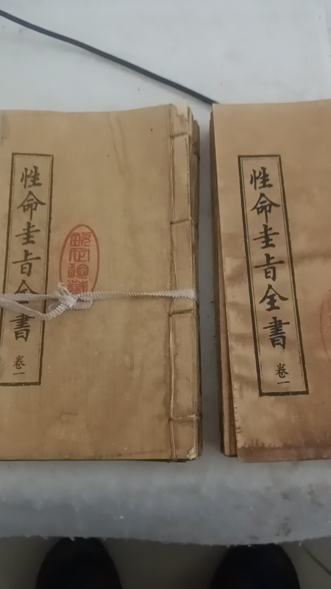
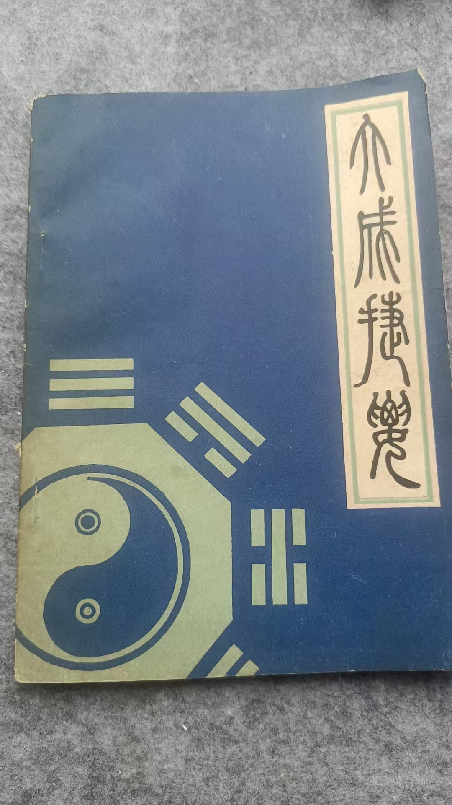
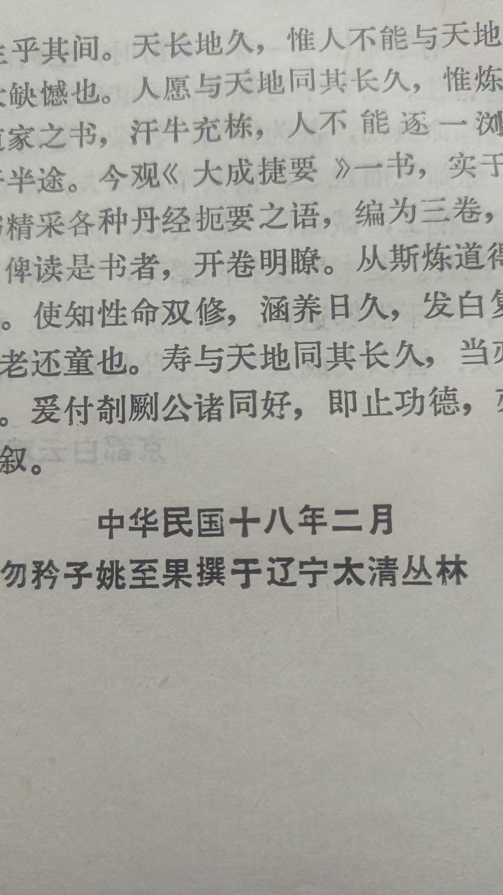
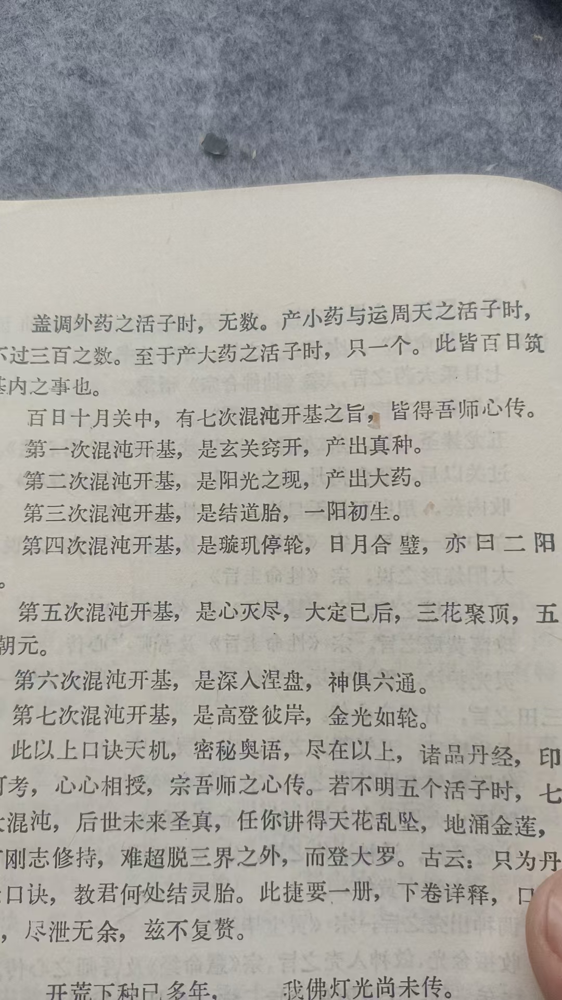

20260527性命圭旨 大成捷要 两本教科书

给学生买的书
这书里提到了儒家修炼
三教合一
学生自己买，不是买了盗版，就是一百六，一百九
我买是不到三十
这是仿古本
大成捷要，买不到旧本了
当时印的就不多
所谓的能量，是我区分气功时代的气，临时定的一个称呼
[强][强][强]
科委在八九十年代，测出特殊训练后，手上放出三到五千个电离子
常人几十个
所以科委当时科学的称呼，就是人体生物电离子
[强][强][强]
再一个意念拨电话号码，是脑电波，释放的电离子
那都是当时的科研成果
排斥能量，就直接不懂科学
老子都说，强为之名
叫他啥也不尽其意
脑电波就是咱们现在说的意念力，
修炼中的性功
心性，就是思维，意念力
哇，原来这么科学呀[鼓掌][鼓掌][鼓掌]
[合十][合十][合十]
手上放出的，就是命功中养命之本的，生物电离子
性命不同，又相同
微妙
所以说玄之又玄
又为什么叫生物电离子
那是区分雷击，跟机械发电
两者

又不同电鳗体内没有发电机械，为什么也产生十万伏特电压
这是真本

八十年代，沈阳重型机械厂，内部发行
崂山道

士朱文彬著一直到百日筑基，调神出窍，三年乳哺，九年面壁
九转五行，再加上这两本书，
修成，足矣
这两本就是教科书